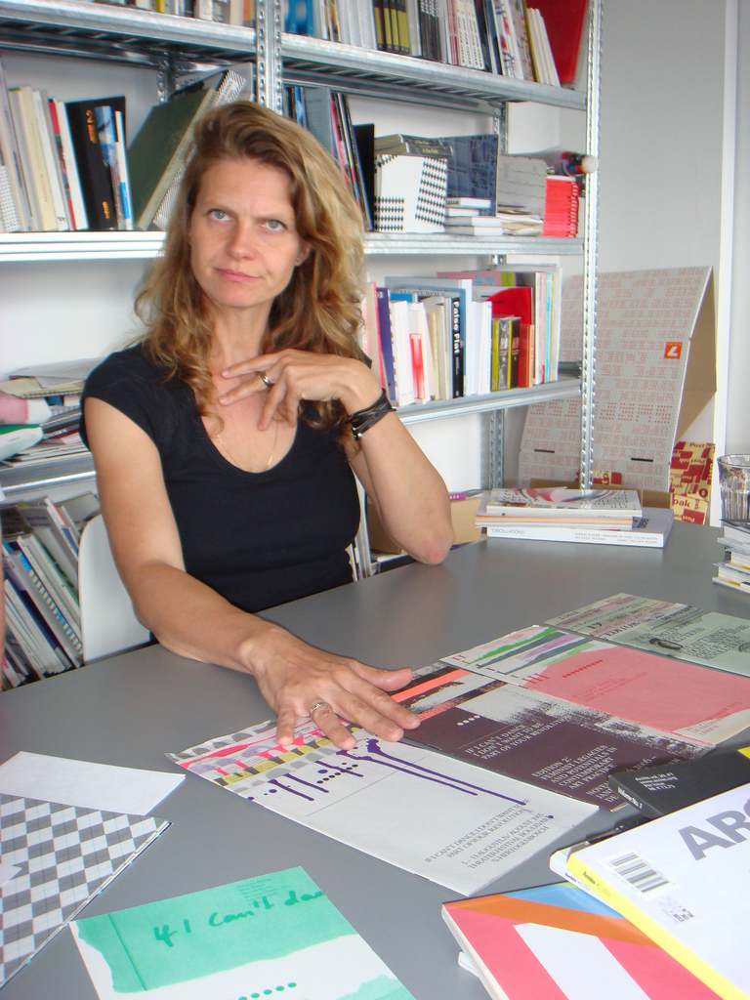

Maureen Mooren
Maureen Mooren is a graphic designer based in Amsterdam,
the Netherlands, where she runs her own studio. She graduated
from the Willem de Kooning Academy, Rotterdam, the Netherlands,
in 1996 and collaborated with Daniel van der Velden until 2007
on a variety of projects, mainly in the cultural field. Mooren & Van
der Velden designed amongst others Archis magazine, the identity
of the Holland Festival, and several catalogues. Between 2001-2004 Mooren
taught at the ArtEZ Institute of the Arts in the Graphic Design Department
in Arnhem, the Netherlands. Since 2007 Mooren has operated independently and
developed identities, books and printed materials, still mostly for cultural
clients such as Holland Festival, Marres, Centre for Contemporary Culture in
Maastricht, and If I Cant Dance, I Dont Want To Be Part Of Your Revolution.
In 2011 she was one of the artists who took part at the presentation Opera
Aperta/Loose Work in the Dutch Pavilion at the Venice Bienniale. In recent
years Mooren has worked as a guest tutor at Werkplaats Typografie in Arnhem,
the Netherlands.
